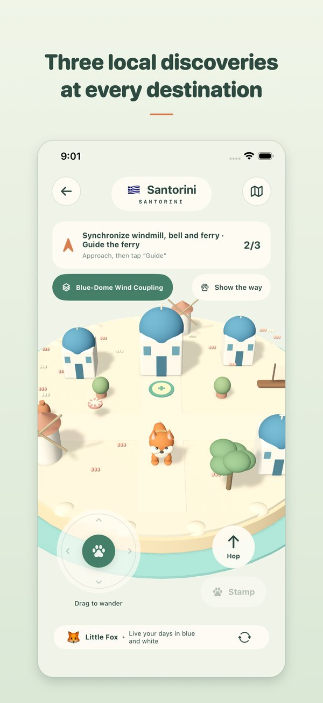
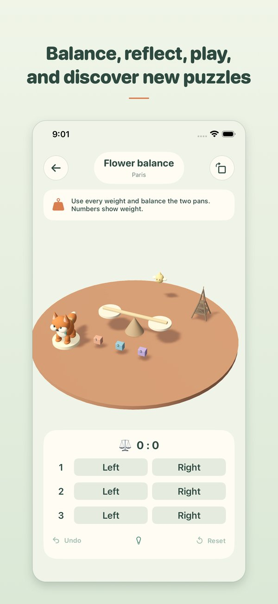
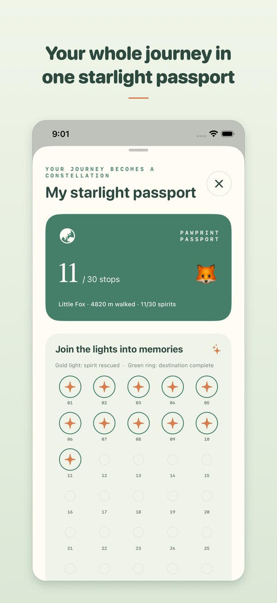

走一走
选择动物伙伴，按自己的步调探索。
小小爪印，大大世界。
一款可以离线玩的 iPhone 3D 旅行解谜游戏。和动物伙伴漫步微缩岛屿，解开小机关，把旅途收进护照。
前往 App Store一次付费 $0.49 · 美国区 · iOS 18+

从京都的樱花，到圣托里尼的蓝顶，再到桂林的山水。每站都有微缩地标、三项当地探索和一个星灵机关。
选择动物伙伴，按自己的步调探索。

连接水渠、分配砝码、折射光线，发现不同玩法。

收集30个主线印章，继续探索三个隐藏世界。
可以。下载游戏后，探索、解谜和保存进度都不需要联网，也不需要注册账号。
爪印环球是付费下载游戏，美国区 App Store 价格为 $0.49，一次购买。没有广告、订阅或 App 内购买。实际价格与可下载地区请以商店页面为准。
支持运行 iOS 18 或更高版本的 iPhone，游戏内可选择简体中文、英语和西班牙语。当前发行地区为美国区 App Store。
没有倒计时。基本规则和目标始终可见，具体解法提示只在点击灯泡后显示。可以撤销操作或重置当前机关。
共有30个主线目的地和3个隐藏世界，合计99项当地探索。其中4站保留桥梁机关，另外29站使用12类非桥梁玩法的不同配置，不是33种完全不同的核心机制。
收齐30个主线护照印章后，三个隐藏世界就会解锁。每站完成当地探索与星灵机关后，回到地标旁的盖章平台领取印章。
游戏不需要账号，没有广告、分析或跟踪 SDK。进度与语言偏好保存在设备上。客服邮件和网站托管的信息处理方式详见隐私政策。
进度自动保存在设备上。删除 App 可能导致本地存档丢失；设备或 iCloud 备份可能保留副本。开发者无法读取你的存档。
请在邮件中提供 iPhone 型号、iOS 版本、App 版本、目的地和问题描述。请勿发送密码或支付信息。